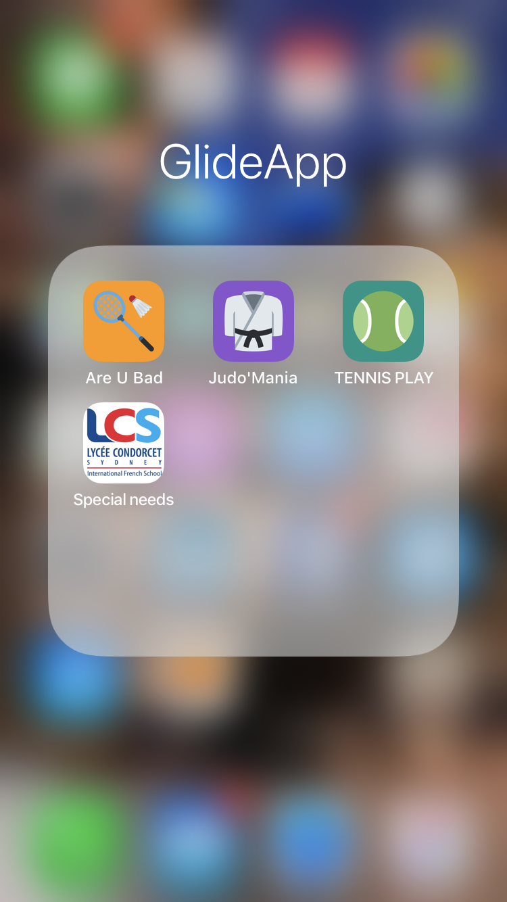

Ressources EPS
Cliquez sur un thème pour filtrer les dossiers.

EPS et PowerPoint
Des supports interactifs construits avec PowerPoint.

Plickers en EPS
Interroger toute la classe avec des cartes à scanner.

Genial.ly en EPS
Des contenus interactifs pour les élèves.

Padlet et continuité en EPS
Organiser et prolonger le travail hors du gymnase.

CartEduc, une app en EPS
Une application pensée pour l'EPS.

Créer une application
Fabriquer sa propre application pour la classe.

Escape game EPS
Apprendre en résolvant des énigmes.

Jeux de cartes en EPS
Des jeux de cartes à utiliser en séance.

Les badges en EPS
Un exemple d'utilisation de badges avec les élèves.

Blog
Les billets du blog, dont la ludification en EPS.

Idoceo
Le carnet de bord numérique de l'enseignant.

Auto et co-évaluation
Rendre les élèves acteurs de leur évaluation.

Exemples d'évaluations
Des évaluations prêtes à adapter.

Réaliser un questionnaire
Construire un questionnaire pas à pas.

Mes productions ASH
Des ressources pour l'adaptation scolaire et le handicap.

Padlet MOOC Dys
Un Padlet de ressources sur les troubles dys.

Genial.ly ASH
Un support interactif consacré à l'ASH.
Liens ASH
Une sélection de sites utiles.

Drive partagé EPS Mania
L'espace de partage de ressources du collectif.

Padlets EPS Mania
Les productions des membres, classées sur Padlet.